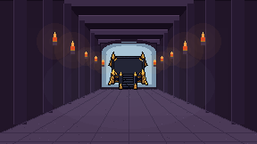
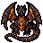
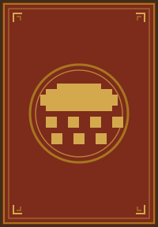
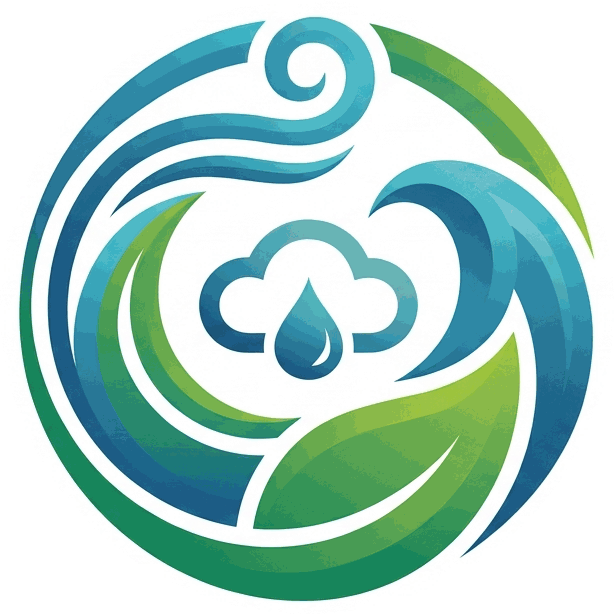

1400
Giliran 1 dari 7
Pilih kartu yang menurutmu bikin hujan turun.

26 kartuDaftar kartunya gagal dimuat.

Envirocircle

Pilih kartu yang menurutmu bikin hujan turun.

26 kartuDaftar kartunya gagal dimuat.